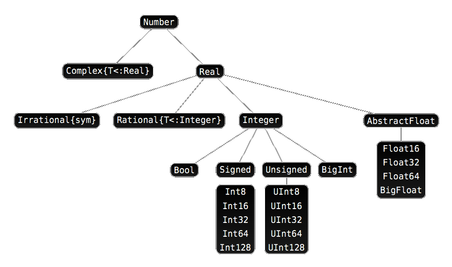
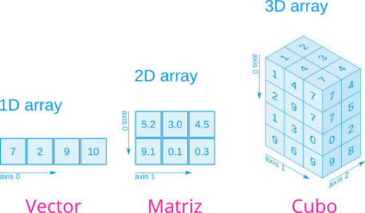

Introducción Julia
Orientada a computación científica y análisis de datos
Introducción a Julia
¿Por qué Julia?
Julia es otro lenguaje de programación más, orientado a cálculo científico el análisis de datos similar a Python, R o Matlab.
¿De veras necesitamos aprender otro lenguaje más?
¿Qué pretende ser Julia?
De los creadores de Julia:
We want a language that is:
- Open source.
- With the speed of C.
- Obvious, familiar mathematical notation like Matlab.
- As usable for general programming as Python.
- As easy for statistics as R.
- As natural for string processing as Perl.
- As powerful for linear algebra as Matlab.
- As good at gluing programs together as the shell.
- Dirt simple to learn, yet keeps the most serious hackers happy.
¿Qué es Julia?
- Julia es un lenguaje de alto nivel con una sintaxis fácil de aprender (similar a Python, R o Matlab) que permite escribir símbolos matemáticos en las expresiones (UTF-8).
- Julia es un lenguaje muy veloz (equiparable a C en muchas tareas.)
- Lenguaje dinámico (tipado dinámico y despacho múltiple).
- De propósito general, pero orientado a la computación científica y el análisis de grandes volúmenes de datos.
- Creado en 2019 en el MIT por el equipo del profesor Edelman.
- Última versión: 1.7 (bastante maduro).
- Desarrollado por una gran comunidad científica.
- Repositorio de paquetes de código abierto con más de 3000 paquetes en dominios muy diversos.
Comparativa de rapidez de Julia con otros lenguajes

Comparativa de Julia con otros lenguajes
Algunas razones más para pensárselo
- Evita el problema de la doble reescritura de código (prototipo + versión operativa).
- Permite la programación paralela y distribuida.
- Puede ejecutar código realizado en otros lenguajes como C, Fortran, Python, R, Matlab, etc.
Instalación de Julia
- Descargar e instalar Julia.
- Añadir Julia al PATH del sistema.
Una vez instalado, para ejecutar el intérprete de Julia basta con abrir una terminal y teclear julia.
El REPL de Julia
El REPL1 de Julia permite ejecutar código de Julia tecleándolo directamente en la terminal.
Tiene, además, varios modos:
;para abrir el modo shell.]para abrir el modo de gestión de paquetes.?para abrir el modoe de ayuda.to open help mode<backspace>para volver al modo normal.
IDEs para Julia

Visual studio code

Visual Studio Code con la extensión para Julia
Jupyter
- Descargar e instalar Python
- Descargar e instalar Jupyter
- Instalar el paquete IJulia:
Jupyter con el kernel de Julia
Tipos de datos y variables
Tipos de datos numéricos
- Enteros:
Int64(64 bits por defecto). - Racionales:
Rational{Int64}. Utilizando el operador//. - Reales:
Float64(64 bits por defecto). - Complejos:
Complex{Int64}. Utilizandoimdespués de la parte imaginaria.
Para averiguar el tipo de un dato se utiliza la función typeof().
Ejemplos de tipos de datos numéricos
Jerarquía de tipos de datos numéricos
Constantes predefinidas
| Símbolo | Descripción |
|---|---|
pi o π |
Número irracional \(\pi\) |
ℯ (\euler + TAB) |
Número irracional \(e\) |
Inf |
Infinito |
NaN |
Valor no numérico |
Missing |
Valor desconocido |
Ejemplo de constantes predefinidas
Tipos de datos alfanuméricos
- carácteres:
Char. Se representan entre comillas simples. - Cadenas:
String. Se representan entre comillas dobles.
Tipo de datos booleanos
- Booleanos:
bool. Son un subtipo de los enterosInteger.
Solo contienen dos posibles valores: true (1) y false (0).
Variables
Como lenguaje de tipado dinámico, no es necesario declarar una variable antes de usarla. Su tipo se infiere directamente del valor asociado.
No obstante, para variables de ámbito local, por ejemplo en funciones, es posible fijar el tipo de una variable indicándolo detras de su nombre con el operador ::.
Nombres de variables
Julia reconoce la codificación Unicode (UTF-8), lo que permite utilizar caracteres con tildes, letras griegas, símbolos matemáticos y hasta emoticonos en los nombres de variables o funciones. Para ello se utilizan códigos especiales (en muchos casos son los mismos que en \(\LaTeX\)), pulsando después la tecla de tabulación.
Distingue entre mayúsculas y minúsculas.
Operadores aritméticos
| Operador | Descripción |
|---|---|
x + y |
Suma |
x - y |
Resta |
x * y |
Producto |
x / y |
División |
x ÷ y |
Cociente división entera |
x % y |
Resto división entera |
x ^ y |
Potencia |
Operadores de comparación
| Operador | Descripción |
|---|---|
== |
Igualdad |
!=, ≠ |
Desigualdad |
< |
Menor que |
<=, ≤ |
Menor o igual que |
> |
Mayor que |
>=, ≥ |
Mayor o igual que |
Operadores booleanos
| Operador | Descripción |
|---|---|
!x |
Negación |
x && y |
Conjunción (y) |
x || y |
Disyunción (o) |
Funciones numéricas predefinidas
Funciones de redondeo
| Función | Descripción |
|---|---|
round(x) |
Devuelve el entero más próximo a x |
round(x, digits = n) |
Devuelve al valor más próximo a x con n decimales |
floor(x) |
Redondea x al próximo entero menor |
ceil(x) |
Redondea x al próximo entero mayor |
trunc(x) |
Devuelve la parte entera de x |
Ejemplo de funciones de redondeo
Funciones de división
| Función | Descripción |
|---|---|
div(x,y), x÷y |
Cociente de la división entera |
fld(x,y) |
Cociente de la división entera redondeado hacia abajo |
cld(x,y) |
Cociente de la división entera redondeado hacia arriba |
rem(x,y), x%y |
Resto de la división entera. Se cumple x == div(x,y)*y + rem(x,y) |
mod(x,y) |
Módulo con respecto a y. Se cumple x == fld(x,y)*y + mod(x,y) |
gcd(x,y...) |
Máximo común divisor positivo de x, y,… |
lcm(x,y...) |
Mínimo común múltiplo positivo de x, y,… |
Ejemplo de funciones de división
Funciones para el signo y el valor absoluto
| Función | Descripción |
|---|---|
abs(x) |
Valor absoluto de x |
sign(x) |
Devuelve -1 si x es positivo, -1 si es negativo y 0 si es 0. |
Raíces, exponenciales y logaritmos
| Función | Descripción |
|---|---|
sqrt(x), √x |
Raíz cuadrada de x |
cbrt(x), ∛x |
Raíz cúbica de x |
exp(x) |
Exponencial de x |
log(x) |
Logaritmo neperiano de x |
log(b,x) |
Logaritmo en base b de x |
log2(x) |
Logaritmo en base 2 de x |
log10(x) |
Logaritmo en base 10 de x |
Ejemplo de raíces, exponenciales y logaritmos
julia> sqrt(4)
2.0
julia> cbrt(27)
3.0
julia> exp(1)
2.718281828459045
julia> exp(-Inf)
0.0
julia> log(1)
0.0
julia> log(0)
-Inf
julia> log(-1)
ERROR: DomainError with -1.0:
log will only return a complex result if called with a complex argument.
...
julia> log(-1+0im)
0.0 + 3.141592653589793im
julia> log2(2^3)
3.0Funciones trigonométricas
| Función | Descripción |
|---|---|
hypot(x,y) |
Hipotenusa del triángulo rectángulo con catetos x e y |
sin(x) |
Seno del ángulo x en radianes |
sind(x) |
Seno del ángulo x en grados |
cos(x) |
Coseno del ángulo x en radianes |
cosd(x) |
Coseno del ángulo x en grados |
tan(x) |
Tangente del ángulo x en radianes |
tand(x) |
Tangente del ángulo x en grados |
sec(x) |
Secante del ángulo x en radianes |
csc(x) |
Cosecante del ángulo x en radianes |
cot(x) |
Cotangente del ángulo x en radianes |
Ejemplo de funciones trigonométricas
Funciones trigonométricas inversas
| Función | Descripción |
|---|---|
asin(x) |
Arcoseno (inversa del seno) de x en radianes |
asind(x) |
Arcoseno (inversa del seno) de x en grados |
acos(x) |
Arcocoseno (inversa del coseno) de x en radianes |
acosd(x) |
Arcocoseno (inversa del coseno) de x en grados |
atan(x) |
Arcotangente (inversa de la tangente) de x en radianes |
atand(x) |
Arcotangente (inversa de la tangente) de x en grados |
asec(x) |
Arcosecante (inversa de la secante) de x en radianes |
acsc(x) |
Arcocosecante (inversa de la cosecante) de x en radianes |
acot(x) |
Arcocotangente (inversa de la cotangente) de x en radianes |
Ejemplo de funciones trigonométricas inversas
Precedencia de operadores
De mayor a menor prioridad.
| Categoría | Operadores | Asociatividad |
|---|---|---|
| Exponenciación | ^ |
Derecha |
| Unarios | + - √ |
Derecha |
| Fracciones | // |
Izquierda |
| Multiplicación | * / % & \ ÷ |
Izquierda |
| Adición | + - | |
Izquierda |
| Comparaciones | > < >= <= == != !== |
|
| Asignaciones | = += -= *= /= //= ^= ÷= %= |= &= |
Derecha |
Operaciones con cadenas
Las cadenas son secuencias de carácteres alfanuméricos del tipo char entre dobles comillas.
Cada carácter tiene asociado un índice entero. El primer carácter de la cadena tiene índice 1.
| Índice | 1 | 2 | 3 | 4 | 5 |
| Cadena | j | u | l | i | a |
Podemos acceder a cada carácter usando su índice entre corchetes a continuación de la cadena:
s[i]: Devuelve el carácter con índiceien la cadenas.
Acceso a carácteres Unicode
Sin embargo, como Julia permite carácteres Unicode, el índice de un carácter en una cadena, no siempre se corresponde con su posición en la cadena. Ello es debido a que la codificación UTF-8 no utiliza el mismo número de bytes para representar los carácteres Unicode. Mientras que los carácteres habituales del código ASCII (letras romanas y números árabes) solo necesitan un byte, otros carácteres como los símbolos matemáticos requieren más.
| Índice | 1 | 4 | 5 | 6 | 9 |
| Cadena | ∀ | x | ∃ | y |
Ejemplo de acceso a carácteres Unicode
julia> c = "∀x ∃y"
"∀x ∃y"
julia> c[1]
'∀': Unicode U+2200 (category Sm: Symbol, math)
julia> c[2]
ERROR: StringIndexError: invalid index [2],
valid nearby indices [1]=>'∀', [4]=>'x'
Stacktrace:
[1] string_index_err(s::String, i::Int64)
@ Base ./strings/string.jl:12
[2] getindex_continued(s::String, i::Int64, u::UInt32)
@ Base ./strings/string.jl:233
[3] getindex(s::String, i::Int64)
@ Base ./strings/string.jl:226
[4] top-level scope
@ REPL[128]:1Acceso a índices en cadenas
Las siguientes funciones permiten acceder a los índices de una cadena:
firsindex(c): Devuelve el índice del primer carácter de la cadenac.lastindex(c): Devuelve el índice del primer carácter de la cadenac.nextind(c, i): Devuelve el índice del carácter de la cadenacque sigue al carácter con índicei.prevind(c, i): Devuelve el índice del carácter de la cadenacque sigue al carácter con índicei.
Ejemplo de acceso a índices en cadenas
Subcadenas
Para obtener subcadenas se usan también los corchetes indicando los índices de inicio y fin separados por :.
s[i:j]: Devuelve la subcadena que va desde el índiceial índicej, ambos incluidos.
También se pueden obtener subcadenas con la siguiente función:
SubString(s, i, j): Devuelve la subcadena que va desde el índiceial índicej, ambos incluidos.
Concatenación de cadenas
a * b: Devuelve la cadena que resulta de concatenar las cadenasayb.a ^ i: Devuelve la cadena que resulta de repetir la cadenaael número de vecesi.repeat(a, i): Devuelve la cadena que resulta de repetir la cadenaael número de vecesi.
Interpolación de cadenas
En una cadena se pueden introducir variables o expresiones precedidas del símbolo $, de manera que al evaluarlas julia sustituye la variable o expresión por su valor. Esto es muy util para formatear salidas.
Otras operaciones comunes con cadenas
length(c): Devuelve el número de carácteres de la cadenac.findfirst(a, c): Devuelve el índice de la primera ocurrencia de la cadenaaen la cadenac. Siano es una subcadena decdevuelve nada (tipoNothing).findlast(a, c): Devuelve el índice de la última ocurrencia de la cadenaaen la cadenac. Siano es una subcadena decdevuelve nada (tipoNothing).findnext(a, c, i): Devuelve el índice de la primera ocurrencia de la cadenaaen la cadenacposterior al índicei.findprev(a, c, i): Devuelve el índice de la última ocurrencia de la cadenaaen la cadenacanterior al índicei.
Otras operaciones comunes con cadenas
occursin(a, c): Devuelvetruesi la cadenaaes una subcadena dec, yfalseen caso contrario.contains(c, a): Devuelvetruesi la cadenaaes una subcadena dec, yfalseen caso contrario.replace(c, a => b): Devuelve la cadena que resulta de sustituir la cadenaapor laben la cadenac.lowercase(c): Devuelve la cadenacen minúsculas.uppercase(c): Devuelve la cadenacen mayúsculas.prefix(c, a): Devuelvetruesi la cadenaaes un prefijo de la cadenac.suffix(c, a): Devuelvetruesi la cadenaaes un sufijo de la cadenac.split(c, a): Devuelve una lista con las cadenas que resulpan de partir la cadenacpor el delimitadora.
Ejemplo de otras operaciones con cadenas
julia> c = "Hola Julia"
"Hola Julia"
julia> length(c)
10
julia> findfirst("a", c)
4:4
julia> findlast("Ju", c)
6:7
julia> findlast("x", c)
julia> occursin("Julia", c)
true
julia> occursin("julia", c)
false
julia> replace(c, "a" => "o")
"Holo Julio"
julia> uppercase(c)
"HOLA JULIA"
julia> split(c, " ")
2-element Vector{SubString{String}}:
"Hola"
"Julia"Estructuras de control
Condicionales
ifcondición 1
bloque código 1
elseifcondición 2
bloque código 2
…
else
bloque código n
end
La indentación de los bloques de código no es necesaria, pero es una buena práctica.
Ejemplo de condicional
Operador condicional
Una forma abreviada de la estructura condicional es el operador condicional.
condición
?bloque true:bloque false
Este operador ejecuta el primer bloque de código si la condición es true y el segundo en caso contrario.
Bucles
Bucles iterativos
foriteradorinsecuencia
bloque código
end
Ejecuta el bloque de código tantas veces como elementos tenga la secuencia. En cada iteración el iterador toma como valor el siguiente elemento de la secuencia.
Bucles iterativos con rangos
En muchas ocasiones la secuencia que se recorre en un bucle iterativo se genera mediante un rango, que es una secuencia de números igualmente espaciados. Existen distintas funciones para generar rangos:
i:j: Genera la secuenciad de números desdeihastaj.i:j:k: Genera la secuencia de números desdeihastakdando saltos dej.StepRange(i, j, k): Genera la secuencia de números desdeihastakdando saltos dej.range(i, j, n): Genera una secuencia dennúmeros desdeihastaj.
Ejemplo de bucles iterativos con rangos
Bucles iterativos anidados
En muchas ocasiones es habitual incluir un bucle iterativo en el bloque de código de otro bucle iterativo, lo que se conoce como bucles anidados.
Julia permite simplicar estas estructuras indicando los iteradores en la cabecera de un único bucle.
Bucles condicionales
whilecondición
bloque código
end
Repite la ejecución del bloque de código mientras que la condición sea cierta.
Interrupción de bucles
La instrucción break provoca inmediatamente la finalización de un bucle tanto iterativo como condicional.
Salto de bucles
La instrucción continue provoca la finalización del bloque de código de un bucle y pasa inmediatamente a la siguiente iteración.
Tipos de datos compuestos
Colecciones de datos con distinta estructura y semántica.
- Arrays
- Vectores
- Matrices
- Tuplas
- Diccionarios
Arrays
Un array es una colección ordenada de datos de un mismo tipo.
El tipo del array se infiere automáticamente a partir de los tipos de sus elementos. Si los elementos son de distintos tipos se convierten al tipo más específico de la jerarquía de tipos del que los tipos de los elementos son subtipos.
Se construyen escribiendo sus elementos separados por comas, puntos y comas o espacios entre corchetes.
Arrays multidimensionales
Los arrays pueden estructurar sus elementos en múltiples dimensiones. Dependiendo el número de dimesiones tenemos distintos tipos de arrays:
Funciones de arrays
length(A): Devuelve el número de elementos del arrayA.eltype(A): Deuvelve el tipo de los elementos del arrayA.ndims(A): Devuelve el número de dimensiones del arrayA.size(A): Devuelve una tupla con los tamaños de las dimensiones del arrayA.size(A, n): Devuelve el tamaño de la dimensiónndel arrayA.axes(A): Devuelve una tupla con los índices válidos de cada dimensión del arrayA.axes(A, n): Devuelve un rango con los índices válidos de la dimensiónndel arrayA.eachindex(A): Devuelve un iterador sobre los índices de los elementos del arrayA.
Constructores de arrays
zeros(dim): Devuelve un array de la dimensiones indicadas por la tupladimcon todos sus elementos ceros.ones(dim): Devuelve un array de la dimensiones indicadas por la tupladimcon todos sus elementos unos.fill(a, dim): Devuelve un array de la dimensiones indicadas por la tupladimcon todos sus elementos igualesa.rand(dim): Devuelve un array de la dimensiones indicadas por la tupladimcon todos sus elementos números aleatorios entre 0 y 1.trues(dim): Devuelve un array de la dimensiones indicadas por la tupladimcon todos sus elementostrue.falses(dim): Devuelve un array de la dimensiones indicadas por la tupladimcon todos sus elementosfalse.
Ejemplos de constructores de arrays
Redimiensionado de arrays
La siguientes funciones permiten cambiar las dimensiones de un array, reestructurando sus elementos:
rehape(A, dim): Devuelve el array que resulta de redimiensionar el arrayAcon las dimensiones indicadas por la tupladim.permutedims(A): Devuelve el array de resulta de trasponer el arrayA.
El array resultante debe tener los mismos elementos que el array original, por lo que si las dimensiones no son compatibles se produce un error.
Ejemplo de redimensionado de arrays
Vectores
Los vectores son arrays de una dimensión.
Se construyen escribiendo sus elementos separados por comas o puntos y comas entre corchetes.
Acceso a los elementos de un vector
El acceso a los elementos de un vector es mediante índices. Cada elemento del vector tiene asociado un índice entero que se corresponde con su posición desde 1 hasta el número de elementos.
v[i]: Devuelve el elemento del vectorvcon índicei.
Si se proporciona un índice no válido se produce un error.
Las palabras reservadas begin y end se utilizan para referirse al primer y último índice de un vector.
Ejemplo de acceso a los elementos de un vector
Acceso a múltiples elementos de un vector
Es posible extraer varios elementos de un vector a la vez indicando los índices mediante un rango o un vector de enteros.
v[i:j]: Devuelve un vector con los elementos del vectorvdesde el índiceialj.v[u]: Devuelve un vector con los elementos del vectorvcorrespondientes a los índices del vectoru.
Modificación de los elementos de un vector
También es posible modificar un vector asignando nuevos elementos mediante los índices.
v[i] = a: Añade el elementoaal vectorven el índicei.
Añadir elementos a un vector
Las siguientes funciones permiten añadir elementos al final de un vector:
push!(v, a): Añade el elementoaal final del vectorv.append!(v, u): Añade los elementos del vectorual final del vectorv.
Recorrer un vector
Una operación habitual es recorrer los elementos de un vector para hacer cualquier operación con ellos. Existen dos posibilidades: recorrer el vector por índice o por valor.
Operaciones con vectores numéricos
minimum(v): Devuelve el menor elemento del vectorv.maximum(v): Devuelve el mayor elemento del vectorv.argmin(v): Devuelve el índice del menor elemento del vectorv.argmax(v): Devuelve el índice del mayor elemento del vectorv.sum(v): Devuelve la suma de los elementos del vectorv.prod(v): Devuelve el producto de los elementos del vectorv.unique(v): Devuelve un vector con los elementos devsin repetir.
Ordenación de vectores
sort(v, rev=true): Devuelve el vector que resulta de ordenar en orden ascendente los elementos del vectorv. Si se pasatrueal parámetrorevel orden es descendente.sort!(v, rev=true): Ordena el vectorven orden ascendente. Si se pasatrueal parámetrorevel orden es descendente.reverse(v): Devuelve el vector con los elementos del vectorven orden inverso.reverse!(v): Modifica el vectorvponiendo sus elementos en orden inverso.
Ejemplo de ordenación de vectores
Extensión de funciones a vectores
Si una función recibe un parámetro del tipo de los elementos de un vector, se puede aplicar la función a cada uno de los elementos del vector, extendiendo la llamada de la función sobre los elementos del vector. Para ello basta con añadir un punto entre el nombre de la función y el paréntesis de los argumentos.
f.(v): Devuelve el vector que resulta de aplicar la funciónfa cada uno de los elementos del vectorv.
En la llamada a la función hay que pasarle com argumentos tantos vectores como parámetros tenga la función. Si los vectores son de distinto tamaño, se reciclan los de menor tamaño.
Si la función no devuelve ningún valor el resultado es un vector de valores nothing.
La extensión de funciones también funciona con operadores, poniendo el punto delante del operador.
Ejemplo de extensión de funciones
Filtrado de vectores
Otra operación bastante común son los filtros de vectores. Se puede filtrar un vector a partir de un vector de booleanos del mismo tamaño.
v[u]: Devuelve el vector con los elementos que tienen el mismo índice que los valorestruedel vector booleanou.
Esto permite aplicar filtros a partir de condiciones que devuelvan un vector de booleanos.
Ejemplo de filtrado de vectores
Álgebra lineal con vectores
u+v: Devuelve el vector que resulta de la suma de los vetoresuyv.u-v: Devuelve el vector que resulta de la resta de los vetoresuyv.a * v: De vuelve el vector que resulta de multiplicar el vectorvpor el escalara.v': Devuelve el vector que resulta de trasponer el vectorv. Sives un vector fila,v'es un vector columna y viceversa.
Con el paquete LinearAlgebra también están disponibles las siguientes funciones:
dot(u, v): Devuelve el producto escalar de los vectoresuyv.norm(v): Devuelve la norma (módulo) del vectorv.
Ejemplo de álgebra lineal con vectores
julia> u = [1, 2, 3]; v = [1, 0, 2];
julia> u + v
3-element Vector{Int64}:
2
2
5
julia> 2u
3-element Vector{Int64}:
2
4
6
julia> dot(u, v) # Producto escalar
7
julia> u'v # Producto escalar
7
julia> norm(v) # Norma o módulo
2.23606797749979
julia> u / norm(u) # Vector unitario
3-element Vector{Float64}:
0.2672612419124244
0.5345224838248488
0.8017837257372732Matrices
Las matrices son arrays de dos dimensiones (filas x columnas).
Se construyen escribiendo sus elementos entre corchetes, separando los elementos por espacio y las filas por punto y coma ;.
Acceso a los elementos de una matriz
El acceso a los elementos de una matriz es mediante índices. Cada elemento de la matriz tiene asociado un par de índices enteros que se corresponde la fila y la columna que ocupa.
A[i, j]: Devuelve el elemento de la matrizAcon índice de filaie índice de columnaj.
Si se proporciona algún índice no válido se produce un error.
También se puede acceder a los elementos de una matriz mediante un único índice. En ese caso se obtiene el elemento con ese índice en el vector que resulta de concatenar los elementos de la matriz por columnas.
Ejemplo de acceso a los elementos de una matriz
Acceso a múltiples elementos de una matriz
Es posible extraer varios elementos de una matriz a la vez indicando los índices de las filas y las columnas mediante un rango o un vector de enteros.
A[i:j, k:l]: Devuelve una matriz con los elementos desde el índice de filaialjy el índice de columnakallde la matrizA.A[u, w]: Devuelve una matriz con los elementos correspondientes a los índices de fila del vectoruy los índices de columna del vectorwde la matrizA.
Ejemplo de acceso a múltiples elementos de una matriz
Modificación de los elementos de una matriz
También es posible modificar una matriz asignando nuevos elementos mediante los índices de fila y columna.
A[i, j] = a: Añade el elementoaa la matrizAcon el índice de filaiy el índice de columnaj.
julia> A = zeros(2, 3)
2×3 Matrix{Float64}:
0.0 0.0 0.0
0.0 0.0 0.0
julia> A[2,3] = 1
1
julia> A
2×3 Matrix{Float64}:
0.0 0.0 0.0
0.0 0.0 1.0